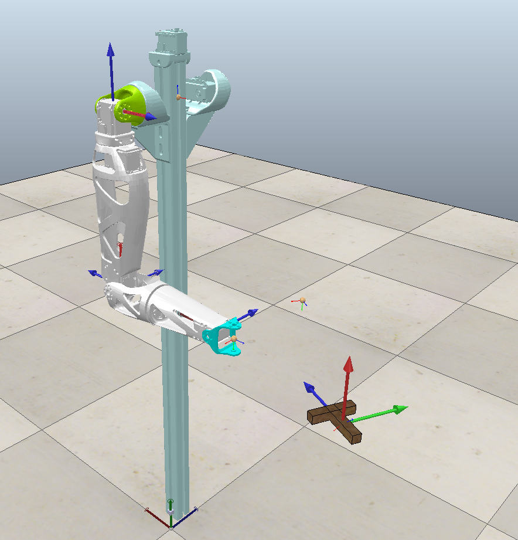
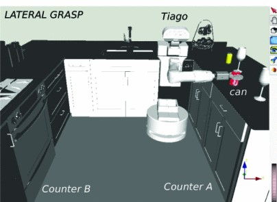
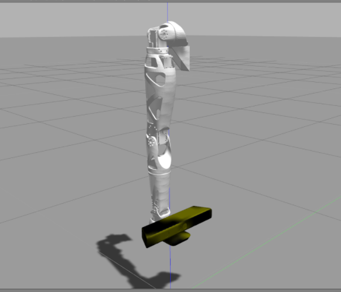
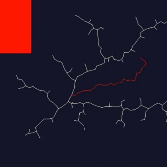
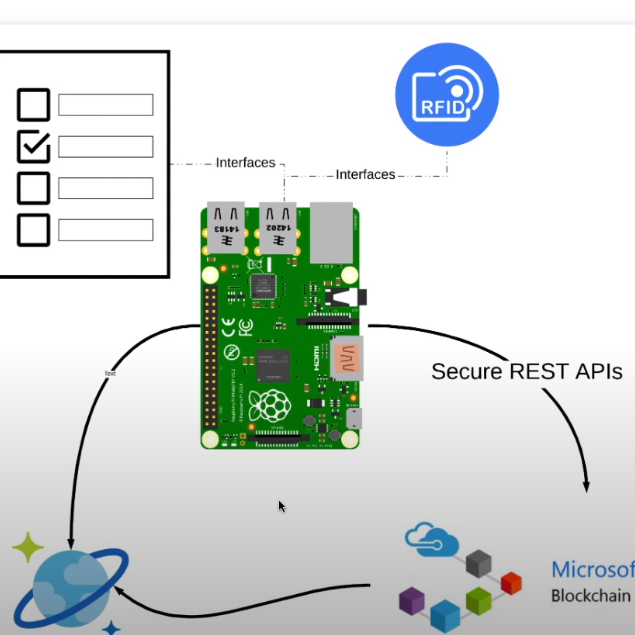
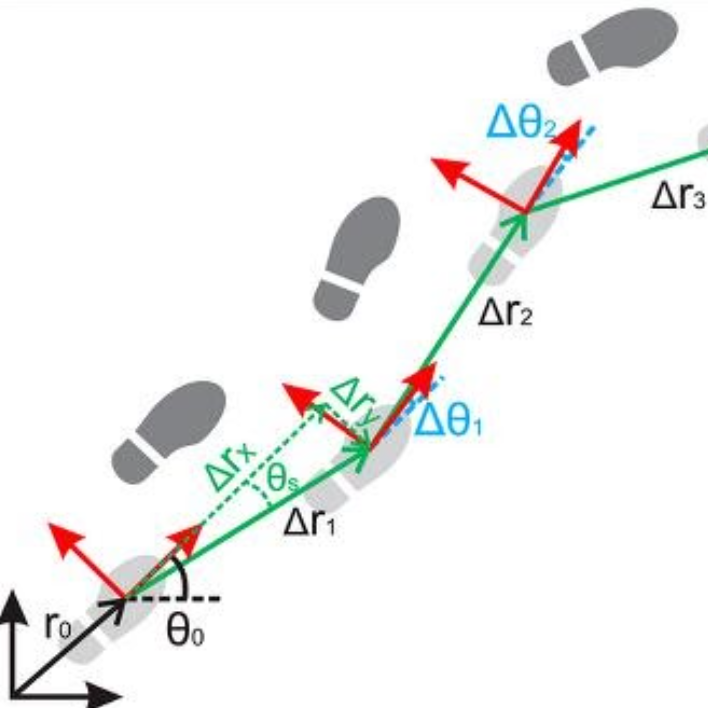

| Vision based control and Motion Planning for Half Humanoid Robot (June 2020 - Present) | |
| (Indian Space Research Organisation)ISRO Respond project |In progress | |
| Technologies: Robot Operating System, Kinnova Actuators, MoveIt, Dynamixel, Gazebo, ArUco, Realsense
Keywords: Robotic Manipulation, Motion Planning, Position Based control, Image-based control, Visual servoing |
|  | Learning-based Approach for Estimation of Axis of Rotation for Markerless Visual Servoing to Tumbling Objects (April 2020- Jan 2021) |
| Publication(Submitted): Siddhant Saoji, Dhruv Krishna, Rajendra Nagar, Suril V Shah |Advances in Robotics (AIR2021) | |
| Technologies: Tensorflow, Keras, CoppeliaSim, Blender, Nvidia DGX-2
Keywords: Convolutional Neural Network, Optical Flow, Visual Servoing, Image-based Control, Robotic Arm, Custom dataset |
|  | Flexibly configuring task and motion planning problems for mobile manipulators (April-Sept 2020) |
| Publication: Siddhant Saoji and Jan Rosell |25th IEEE International Conference on Emerging Technologies and Factory Automation (ETFA) 2020. | |
| Technologies: Robot Operating System, TIAGo mobile manipulator, The Kautham Project, GraspIt
Keywords: Robotic Manipulation, Task Planning, Motion Planning |
|  | Vision Based Manipulation and Grasping (Jan 2020 - June 2020) |
| Done In colaboration with (IISU) ISRO Inertial Systems Unit | |
| Technologies: Robot Operating System, Reachy arm, MoveIt, Dynamixel, Gazebo, Kinect Keywords: Robotic Manipulation, Motion Planning, Image-based control, Visual servoing, Velocity Control |
|  | qRRT:Quality Biased Incremental RRT for optimal motion planning (Summer 2019) |
| Poster: IIT Jodhpur, Industry Day 2020 | |
| Technologies: Pygame, OpenAI Gym
Keywords: Deep Reinforcement Learning, Rapidly-exploring random trees, Motion Planning |
|  | Blockchain based e-Voting (2019) |
| Video: Microsoft Code.Fun.Do++19 | |
| Technologies: Blockchain, Raspberry Pi, Microsoft Azure, RFID
Keywords: e-Voting, Blockchain, IoT |
|  | NETRA- Indoor Navigator for Visually Impaired (July 2018- June 2019) |
| Poster: IIT Jodhpur, Industry Day 2020 | |
| Technologies: Beaglebone black, 9-Axis IMU, TI-MSP430
Keywords: Dead reckoning, Indoor Navigation, TI-IICDC 2018 |